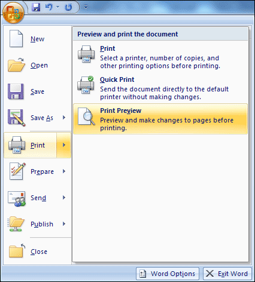
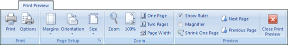
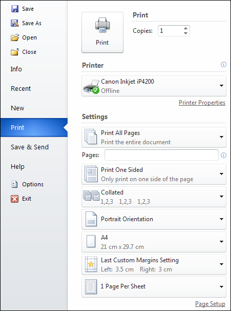

Microsoft Word 2007 to 2010
Print Preview
To see what your headers and footers look like, you can
preview them.
Print Preview in Word 2007
Click the round Office button in the top left of Word, in Office 2007.
Then select Print. From the Print options, select Print Preview:

When you click on Print Preview you're left with just
a single tab. This one:

To get back to the normal Word ribbons, click the Close
Print Preview button on the right.
But have a look at your headers and footers. Use the Zoom control on
the tab to zoom in and out.
Print Preview in Word 2010
In Word 2010, there is no Print Preview tab. Instead, click on the
File tab then on Print from the left menu:

You should see some settings for your installed printer
appear. To preview what you're about to print, have a look just to the
right of the printer settings area. You should see your document. Use
the zoom tool at the bottom, or the next page icons.
OK, we're done with the story now. So save your work and we'll move
on to creating a booklet in Microsoft Word.
Creating a Booklet -->
<--Back to the Word
Contents Page
View all our Home Study Computer
Courses
 home
home